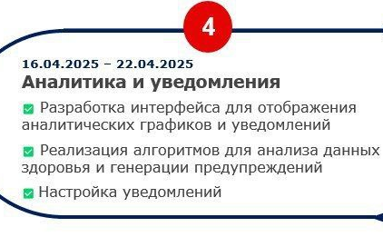

Журнал работы
Здесь представлен поэтапный план разработки проекта CareSync.
Неделя 1: Проектирование и подготовка
- Дизайнер: Проработка макетов авторизации, панелей пациента и компании, согласование дизайна
- Фронтендер: Настройка проекта, базовые роуты, формы авторизации, начало дашборда
- Бэкендер: Проектирование базы данных, API авторизации, настройка PostgreSQL
Неделя 2: Личный кабинет пациента
- Дизайнер: UI личного кабинета, экран подключения устройств
- Фронтендер: Экран кабинета пациента, интеграция Google Fit API, подключение устройств
- Бэкендер: Эндпоинты и хранение данных здоровья, API для устройств
Неделя 3: Панель компании
- Дизайнер: UI панели компаний (список пациентов, разрешения)
- Фронтендер: Реализация панели компаний, таблица пациентов, запросы на доступ
- Бэкендер: API компаний и управления разрешениями
Неделя 4: Аналитика и интеграции
- Дизайнер: Дизайн аналитики (графики, уведомления)
- Фронтендер: Отображение аналитики и предупреждений
- Бэкендер: Анализ данных, уведомления на основе рисков
Неделя 5: Тестирование и отладка
- Дизайнер: Финальные исправления UI/UX
- Фронтендер: Исправление багов, тестирование API
- Бэкендер: Оптимизация API, финальные тесты